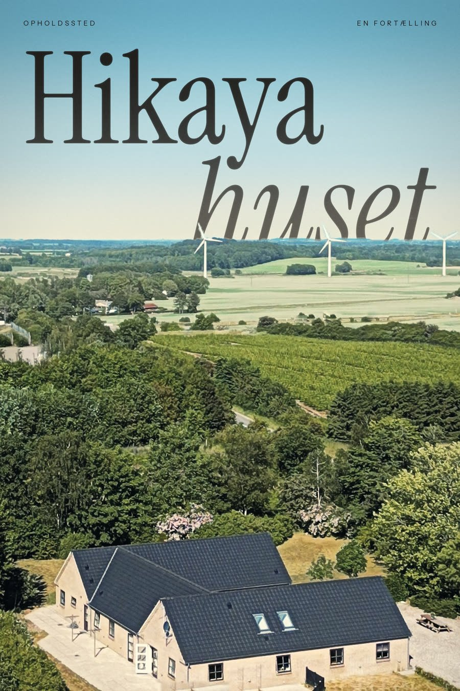

Motion graphic · Plakat
Hikayahuset: en fortælling
Intro til opholdsstedet Hikayahuset. Dronen stiger op over huset i solnedgang, og titlen lægger sig bag horisonten, så typografien bliver en del af landskabet. Plakaten bruger samme greb.
Leveret: Motion design, typografi og plakat.